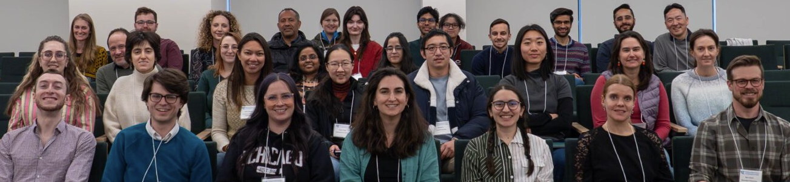

News
| September 1, 2026: Excited to
announce that I will once again be
co-organizing an NITMB workshop on
"Curiosity-driven dialogue and collaboration
between experiment and theory", which will
be hosted at the NITMB in Chicago, IL on March
22-24, 2027. Details on the workshop
and application form can be found here. |
August 16-30, 2026: Incredibly
grateful to have had the opportunity to
participate in the Aspen Center for Physics
and interact with many amazing physicists
through the "Physics of Collective Function
in Active Living Matter" workshop.
|
July 6-9, 2026:
Excited to have organized a minisymposium on
"Computational and Mathematical Approaches to
Cytoskeletal Dynamics" in this year's SIAM Life
Sciences meeting.
|
February
3-5, 2026:
Our NITMB workshop on Curiosity and
Collaboration featured fantastic
synergies across mathematics,
biology, physics, computation, and
engineering. We are grateful to have
hosted 50
participants, highlighting research
across fields and career stages.
|

|
| December
1, 2025:
Excited
to share that our workshop
co-organized with NITMB Fellow Gabe
Salmon has been accepted. Join us
for stimulating discussions across
the spectrum of theory and
experiment in February 2026! Details
here. |
 |
|
| Sept
1, 2025:
Finally
joining the team at NITMB and
UChicago! Looking forward to
inspiring conversations and new
research avenues. |
 |
May 12, 2025: PhD defended! Thank
you to everyone who made this
possible |
 |
|
|